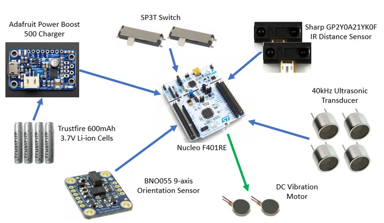
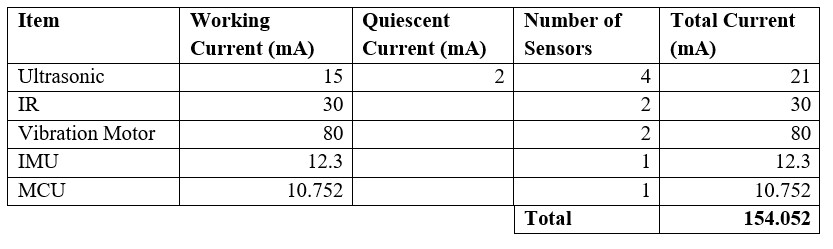

Electrical Architecture
The following image shows the high level electrical architecture for the OculAid system.
To power the system, four 600mAh, 3.7V Li-ion cells made by Trustfire are placed in parallel totalling to 2400mAh. These cells are fed into the ‘Adafruit Power Boost 500 Charger’ which houses both the charging/protection circuitry for the Li-ion cells as well as a boost convertor which outputs 5V for powering the microcontroller. The microcontroller being used is the STMF401RE microcontroller. The microcontroller takes in many inputs with two single-pole triple throw switches being used for adjusting the sensitivity of vibration and measurement distance. One switch is used to adjust the sensitivity of vibration to be high, medium, or low; the other switch is used to control the measurement distance to be long, short, or off. The distance measurements are taken using two ‘Sharp GP2Y0A21YK0F’ infrared time-of-flight distance sensors, and four custom ultrasonic distance sensors made from 40kHz ultrasonic transducers. A BNO055 9-axis orientation sensor uses a gyroscope, accelerometer, and magnetometer to provide the absolute orientation of the system. All these inputs are processed and a signal proportional to the distance and location is sent to the two vibration motors to provide feedback to the user.
Battery Selection
In order to select a battery, a conservative estimate for the total current draw was calculated. The table below shows the current draw for each component. To get the current draw of the ultrasonic sensors, it is assumed that one sensor is always operational drawing 15mA and the other three sensors are drawing the quiescent current of 2mA. Similarly, for the IR sensors, only one is operational at a given time. The vibration motor current draw is calculated by both motors operating at half power (full power is a very intense vibration). Finally, the IMU and MCU are constantly drawing their average current consumption. This totals to 154.052mA current draw at 5V. Since the system uses a boost converter to take the 3.7V cells up to 5V, the current draw at 3.7V from the battery is 208.18mA. Finally, assuming the converter is operating at 95% efficiency (safe assumption according to the data sheet) the operating current is 218.59mA. Considering the constraint for an 8-hour battery life, the required battery capacity is 1748.7mAh. Based on this, four 600maH battery cells were chosen in parallel to supply the required charge capacity.
